Análisis y clasificación de tweets de usuarios peruanos sobre su posición respecto a la guerra entre Rusia y Ucrania
Curso: Introducción a Ciencia de Datos (CS351)
Profesor: Dr. Erick Gomez Nieto
Semestre: 2022–1
El 24 de febrero de 2022 Rusia inició la invasión a gran escala de Ucrania. En las semanas siguientes la guerra ocupó buena parte de la conversación pública incluso en países alejados del conflicto. En el Perú tuvo además una dimensión local: el alza de combustibles y fertilizantes se atribuyó en gran medida a la guerra y terminó alimentando protestas en abril de ese año. Este proyecto, desarrollado como trabajo final del curso, se propuso medir cómo se posicionaron los usuarios peruanos de Twitter frente al conflicto: recolectar sus publicaciones, explorarlas, etiquetar a mano una muestra y entrenar un clasificador capaz de asignar a cada tweet un bando.
Este artículo recorre el pipeline completo, desde la recolección de datos hasta la aplicación del modelo sobre 26 000 tweets, y resume los hallazgos.
1. Objetivos
Objetivos principales
- Conocer la opinión peruana sobre la invasión rusa en Ucrania.
- Generar un modelo clasificador que permita determinar a qué bando apoya un tweet.
Objetivos secundarios
- Conocer las cuentas más activas respecto a este tema.
- Conocer la variación del interés respecto al tiempo.
- Averiguar si existe propaganda por alguna parte beligerante.
2. Pipeline aplicado
El trabajo se organizó en cinco etapas: recolección de datos, regularización y limpieza, análisis exploratorio, etiquetado y entrenamiento de un modelo. Las dos últimas se alimentaron mutuamente: lo que se aprendía al entrenar y aplicar el modelo obligaba a volver a la exploración, revisar etiquetas y repetir.
2.1 Recolección de datos
Twitter no ofrecía en 2022 una forma sencilla de descargar tweets históricos filtrados por ubicación sin pasar por su API de pago, así que se usaron dos herramientas de scraping que consultan la búsqueda pública sin credenciales:
- Twint, una herramienta de scraping de Twitter y OSINT escrita en Python.
- snscrape, un scraper genérico para servicios de redes sociales (SNS, social networking services).
Se empezó con Twint y se incorporó snscrape cuando la primera se volvió inestable. Ambas herramientas devuelven cada tweet como una línea JSON con su identificador, fecha, usuario, texto, idioma, conteo de respuestas y hashtags. Las búsquedas se construyeron combinando tres dimensiones: palabras clave, ubicación geográfica y ventana de tiempo.
Palabras clave. Twint consultó 23 términos en español e inglés. snscrape, incorporado después, usó una lista más acotada de 14 términos que excluía los más genéricos.
| Herramienta | Términos de búsqueda |
|---|---|
| Twint (23) | guerra, war, invasion, Ucrania, Ukraine, Rusia, Russia, Rusia vs Ucrania, Ucrania vs Rusia, Russia vs Ukraine, Ukraine vs Russia, Estados Unidos, United States, USA, Donbas, Donbass, Crimea, Putin, Zelenskyy, propaganda, intromision, Kiev, Kyiv |
| snscrape (14) | Ucrania, Ukraine, Rusia, Russia, Rusia vs Ucrania, Ucrania vs Rusia, Russia vs Ukraine, Ukraine vs Russia, Donbas, Donbass, Crimea, Zelenskyy, Kiev, Kyiv |
Ubicación geográfica. Para restringir la búsqueda a usuarios peruanos se usó el operador geocode:latitud,longitud,radio de la búsqueda de Twitter, que devuelve tweets de usuarios ubicados dentro de un círculo. Se definió un círculo por cada una de las 24 capitales de departamento, con un radio ajustado al tamaño del departamento: desde 22 km para Tumbes y 33 km para Tacna hasta 180 km para Lima y 220 km para Cusco. Los círculos cubren buena parte del territorio poblado, aunque se solapan entre sí y dejan zonas de la Amazonía sin cubrir.
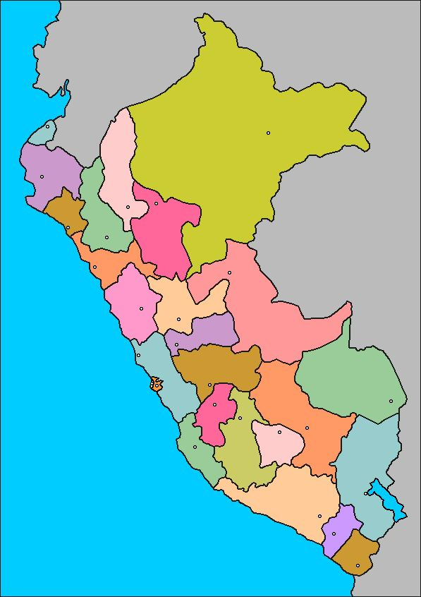
geocode toma la ubicación del geoetiquetado del tweet o, en su defecto, de la ubicación declarada en el perfil del usuario.Ventanas de tiempo. Twint recorrió el periodo desde el 26 de febrero de 2022 en ventanas de dos días, con un límite de 1 000 tweets por consulta. snscrape recorrió ventanas de un día desde el 24 de enero hasta el 3 de mayo de 2022, es decir, con un mes de conversación previa a la invasión como línea base, y una segunda corrida cubrió del 1 al 24 de mayo. Cada corrida iteró sobre todas las combinaciones de término y ciudad: 552 consultas por ventana en Twint y 336 por día en snscrape, lanzadas como procesos en segundo plano en lotes de diez.
snscrape --jsonl --progress --since 2022-05-01 \
twitter-search "Ucrania geocode:-12.04318,-77.02824,180km until:2022-05-24" \
> snscrape_data/Ucrania_-12.04318,-77.02824,180km.jsonLa configuración de Twint fue equivalente: salida en JSON, hashtags incluidos y las propiedades Since, Until, Geo y Search reasignadas en cada iteración del bucle sobre ventanas, ciudades y términos.
2.2 Regularización y limpieza de datos
Regularización. Twint y snscrape nombran y estructuran los campos de forma distinta, así que el primer paso fue transformar la salida de ambas a un formato común.
Eliminación de duplicados. Por la forma de búsqueda los duplicados eran inevitables: un tweet que menciona «Rusia» y «Ucrania» aparece en ambas consultas, los círculos geográficos solapados devuelven el mismo tweet desde varias ciudades, y las ventanas de Twint y snscrape se superponen. Se deduplicó por el identificador del tweet.
Filtrado por términos centrales. Se conservaron solo los tweets que contenían al menos uno de 18 términos centrales, descartando los que solo coincidían con palabras genéricas como «guerra», «invasión» o «propaganda». Así se evitó que una «guerra de precios» o una discusión sobre propaganda electoral entraran al dataset. Se contabilizó además cuántos tweets tenían respuestas y cuántas respuestas quedaron fuera, ya que los scrapers devuelven el tweet original pero no el hilo. Los tweets se separaron por idioma y el análisis se concentró en los publicados en español.
Limpieza y lematización. Para el análisis exploratorio, el texto pasó por tres pasos:
- Remoción de puntuación, stopwords, URLs y tokens no alfabéticos.
- Conversión a minúsculas.
- Lematización, de modo que «rusos», «rusa» y «ruso» cuenten como una sola palabra, y los verbos se reduzcan a su infinitivo.
Esta versión limpia alimentó las nubes de palabras, las frecuencias, los skip-grams y las proyecciones. El clasificador, en cambio, recibió el texto original, con puntuación, mayúsculas y emojis, porque el modelo base maneja su propia tokenización.
2.3 Análisis exploratorio
Tweets respecto al tiempo. El volumen diario muestra con claridad cuándo la guerra ocupó la conversación peruana. Antes del 24 de febrero la actividad es casi nula. El primer pico, de unos 540 tweets diarios, llega con la invasión y decae durante marzo. El pico más alto, cercano a 1 270 tweets en un día, ocurre en la primera semana de abril y coincide con la difusión de las imágenes de Bucha, con la suspensión de Rusia del Consejo de Derechos Humanos de la ONU y, en el plano local, con el paro de transportistas y el toque de queda del 5 de abril en Lima, motivados en parte por el alza de combustibles atribuida a la guerra. Siguen repuntes a inicios y mediados de mayo y a fines de junio. Los tramos en cero de la segunda quincena de abril y de fines de mayo a mediados de junio corresponden, probablemente, a periodos no cubiertos por las corridas de recolección más que a un silencio real.
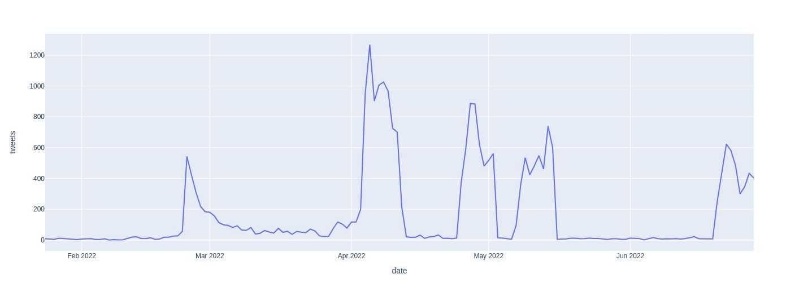
Usuarios más activos. Las cuentas con más publicaciones sobre el tema son, en su mayoría, medios de comunicación: Gestión, RPP, El Comercio, La República, Exitosa, Alerta Punto PE y agregadores como Feed Peruano. Entre ellas se cuelan cuentas personales muy activas, como renzito1970, la segunda con más tweets, o dogdega y revolucion_web. Volveremos sobre ellas al aplicar el modelo.
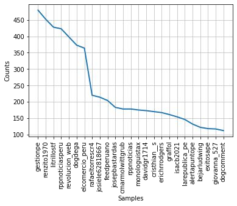
Vocabulario. La nube de palabras y la curva de frecuencias muestran que la conversación gira alrededor de Rusia más que de Ucrania: «ruso» aparece unas 3 000 veces, contra unas 1 400 de «ucraniano». Le siguen «país», «poder», «otan», «eeuu», «mundo», «invasión», «chino», «nazi», «perú», «conflicto», «arma» y «europa». La presencia destacada de OTAN, Estados Unidos y China sugiere que buena parte de los usuarios encuadró la guerra como una confrontación geopolítica entre bloques y no solo como un conflicto entre dos países, y la aparición de «nazi» entre las palabras frecuentes recoge el marco de «desnazificación» usado por la propaganda rusa, ya sea para repetirlo o para rebatirlo.
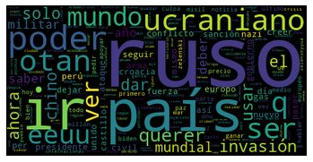
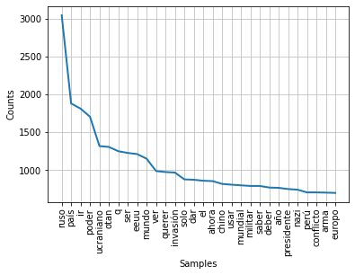
Bolsa de palabras y TF-IDF. Se construyeron representaciones de bolsa de palabras (BoW) y TF-IDF, que sirvieron de base para las proyecciones posteriores. Las diez palabras más comunes del vocabulario resultante repiten la lectura anterior.
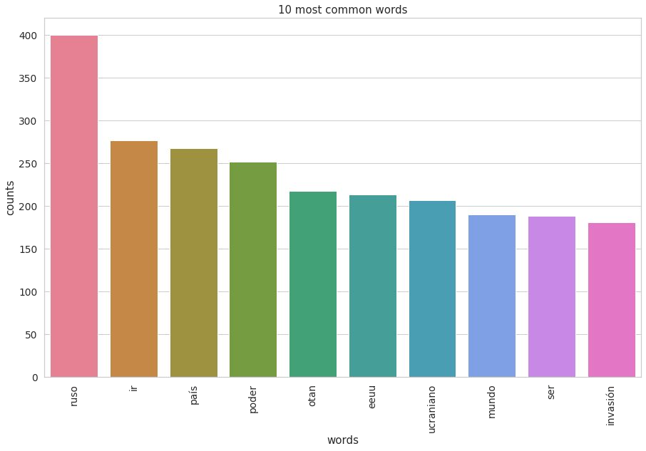
Skip-grams. Los skip-grams permiten ver qué palabras aparecen juntas aunque no sean adyacentes. Los 2-skip-bigramas más frecuentes son «invasión ruso», «fuerza armado», «último hora», «unión europeo», «pedro castillo» y «derecho humanos». Los 2-skip-trigramas están dominados por «consejo derecho humanos» y sus variantes con «suspender», que corresponden a la votación del 7 de abril de 2022 en la que la Asamblea General de la ONU suspendió a Rusia del Consejo de Derechos Humanos. También aparece «último hora directo», la marca de los medios en sus noticias de última hora. Que «pedro castillo», presidente del Perú en ese momento, figure entre los bigramas más frecuentes confirma que la conversación local mezcló la guerra con la política interna.
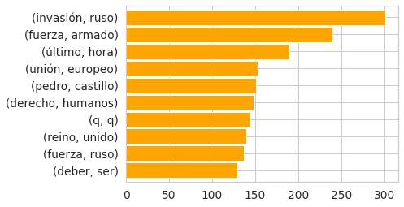
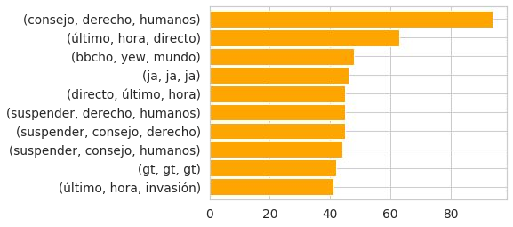
PCA y clustering. Se proyectó la representación TF-IDF a dos componentes principales, retirando antes las palabras clave de búsqueda para que la estructura no reflejara simplemente qué término había recuperado cada tweet. La proyección forma dos brazos y el clustering aplicado sobre ella separa grupos a lo largo de esos brazos, pero ninguno se corresponde con una postura identificable al inspeccionar los tweets de cada grupo.
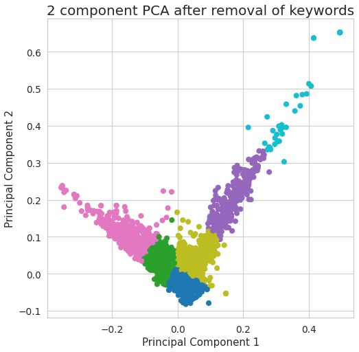
UMAP. La proyección UMAP tampoco ayudó: casi todos los tweets caen en una sola masa densa, con tres puntos aislados. Los métodos no supervisados no revelaron una estructura de opiniones aprovechable, lo que motivó pasar al etiquetado manual y a un modelo supervisado.
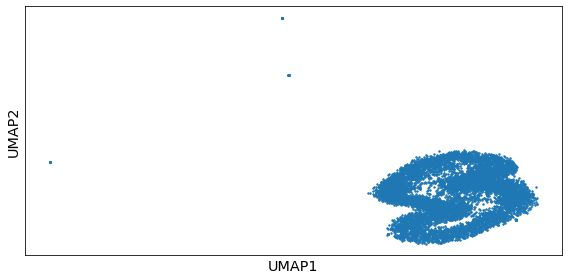
2.4 Etiquetado de datos
Para entrenar un clasificador hacía falta un conjunto de tweets etiquetados a mano. La primera decisión fue qué escala usar. Una escala de tres posiciones, a favor de Rusia, neutral y a favor de Ucrania, resulta insuficiente: muchos tweets critican a Ucrania, a Zelensky o a la OTAN sin elogiar a Rusia, y muchos otros condenan a Putin sin tomar partido por Ucrania. Se definió entonces una escala de cinco posiciones, ordenada de un extremo al otro, y se conservó la de tres como alternativa para comparar.
| Etiqueta | Código | Nombre | Significado |
|---|---|---|---|
| 0 | R+ | pro_russia | A favor de Rusia |
| 1 | U− | against_ukraine | En contra de Ucrania |
| 2 | N | neutral | Neutral o informativo |
| 3 | R− | against_russia | En contra de Rusia |
| 4 | U+ | pro_ukraine | A favor de Ucrania |
Un ejemplo de cada categoría, tomado del conjunto etiquetado:
| Etiqueta | Tweet |
|---|---|
| 0 · pro_russia | «Protestas en Bulgaria contra el suministro de armas a Ucrania: “¡Nosotros, los búlgaros, no permitimos el suministro de equipo militar a Ucrania e insistimos en que Rusia rompa la espalda de los nazis estadounidenses-ucranianos de una vez por todas!”» |
| 1 · against_ukraine | «Es inaceptable que la inteligencia sólo sea usada para destruir, boicotear la paz en el planeta, Putin ya ganó, Zelenski quedó como un estúpido bufón que fue utilizado para beneplácito de USA.» |
| 2 · neutral | «Una serie de ataques intensos contra los objetos de los militantes de las Fuerzas Armadas de Ucrania en el asentamiento. Severodonetsk, Rubizhnoye, Lisichansk, Kremennaya, Gornoye, Popasnaya, etc.» |
| 3 · against_russia | «Putin es un asesino y genocida.» |
| 4 · pro_ukraine | «Dios salve a Ucrania» |
Nótese que el tercer ejemplo, un parte militar redactado desde el punto de vista ruso, se etiqueta como neutral: la categoría agrupa el contenido informativo aunque provenga de una de las partes. El etiquetado se hizo sobre un subconjunto reducido del dataset, lo que condicionó los resultados que siguen.
2.5 Entrenamiento del modelo
Con el conjunto etiquetado se ajustó un modelo de clasificación de secuencias con la biblioteca transformers de Hugging Face. Como modelo base se eligió finiteautomata/beto-sentiment-analysis, una versión de BETO, el BERT entrenado en español, ya ajustada para análisis de sentimiento por el proyecto pysentimiento. Partir de un modelo que ya distingue polaridad en español acorta el entrenamiento y aprovecha un conjunto etiquetado pequeño. Se usó el tokenizador del propio modelo base y una partición de 80 % para entrenamiento y 20 % para evaluación.
from transformers import AutoTokenizer
base_model_name = "finiteautomata/beto-sentiment-analysis"
training_set_percentage = 0.8
model = base_model_name
tokenizer = AutoTokenizer.from_pretrained(model)Se entrenaron dos variantes, una con tres etiquetas y otra con cinco, y se evaluaron con exactitud y F1 sobre la partición de prueba.
| 3 etiquetas | 5 etiquetas | |
|---|---|---|
| Exactitud (accuracy) | 78,92 % | 73,78 % |
| F1 | 79,04 % | 74,56 % |
Elección del modelo. La variante de tres etiquetas obtiene unos cinco puntos más en ambas métricas, pero lo hace a costa de fusionar posturas distintas. Se eligió el modelo de cinco etiquetas: pierde algo de precisión, pero conserva la diferencia entre atacar a Ucrania y defender a Rusia, o entre condenar a Rusia y apoyar a Ucrania, que era justamente lo que se quería medir. Sobre los cinco ejemplos de la sección anterior el modelo elegido reproduce las etiquetas manuales.
2.6 Análisis del dataset usando el modelo
El modelo de cinco etiquetas se aplicó a los 26 000 tweets del dataset limpio. Esta es la distribución resultante.
| Categoría | Tweets | % del total | % de los no neutrales |
|---|---|---|---|
| neutral | 18 324 | 70,5 % | — |
| against_russia | 3 376 | 13,0 % | 44,0 % |
| pro_russia | 2 088 | 8,0 % | 27,2 % |
| against_ukraine | 1 597 | 6,1 % | 20,8 % |
| pro_ukraine | 615 | 2,4 % | 8,0 % |
| Total | 26 000 | 100 % | 7 676 no neutrales |
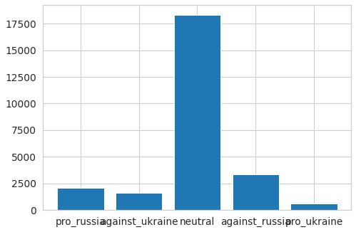
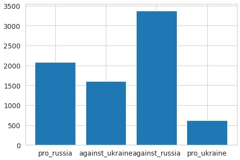
Tres lecturas se desprenden de la tabla:
- Siete de cada diez tweets son neutrales. La mayor parte de la conversación es informativa: noticias, partes de guerra, cifras. Esto es coherente con que los usuarios más activos sean medios de comunicación.
- Se rechaza a Rusia mucho más de lo que se apoya a Ucrania. Los tweets contra Rusia son más de cinco veces los tweets a favor de Ucrania. La postura mayoritaria entre quienes opinan es la condena a Putin y a la invasión, no la adhesión a la causa ucraniana.
- El bloque prorruso no es marginal. Sumando los tweets a favor de Rusia y en contra de Ucrania se llega a 3 685, frente a 3 991 del bloque contrario. Entre los tweets con postura, el 48 % se alinea con Rusia y el 52 % con Ucrania.
Usuarios por categoría. Al mirar quién publica en cada categoría aparecen patrones que la distribución agregada esconde.
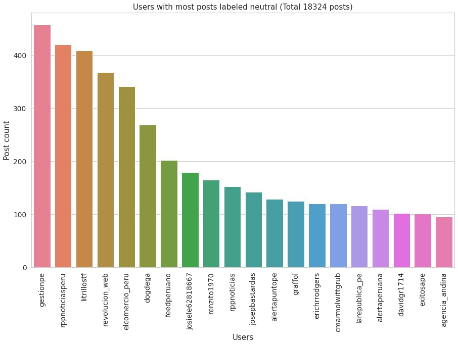
Los medios (Gestión, RPP, El Comercio, La República, Exitosa, Andina) concentran sus publicaciones en la categoría neutral, lo que confirma que informaron sin tomar partido explícito, al menos según el modelo.
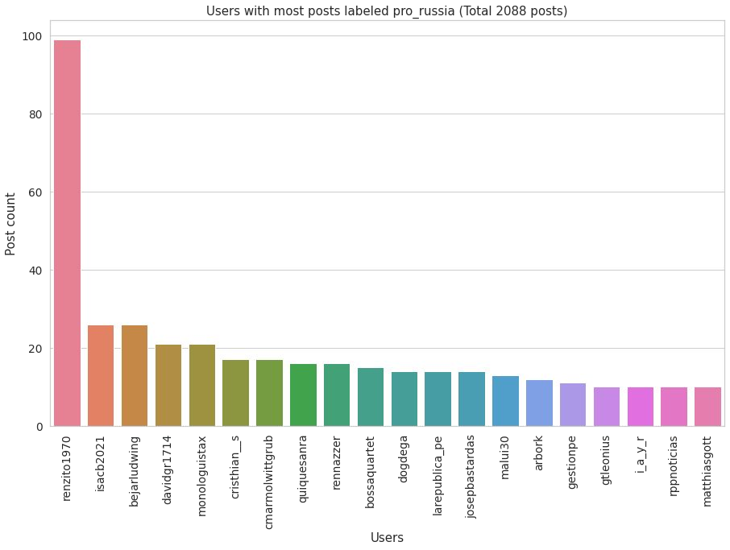
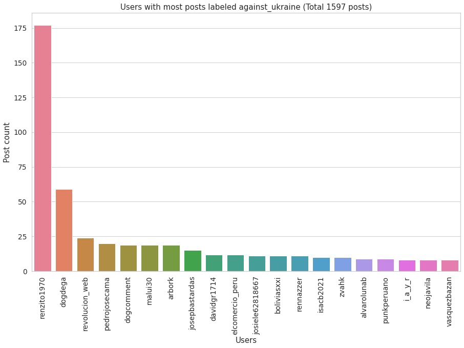
La cuenta renzito1970 encabeza de lejos ambas categorías del bloque prorruso: cerca de 100 tweets a favor de Rusia y unos 175 en contra de Ucrania, casi cuatro veces más que la siguiente cuenta en cada lista. Es la segunda cuenta más activa de todo el dataset y alrededor del 60 % de sus publicaciones caen en ese bloque. Le siguen dogdega, isacb2021, bejarludwing y revolucion_web, con volúmenes mucho menores.
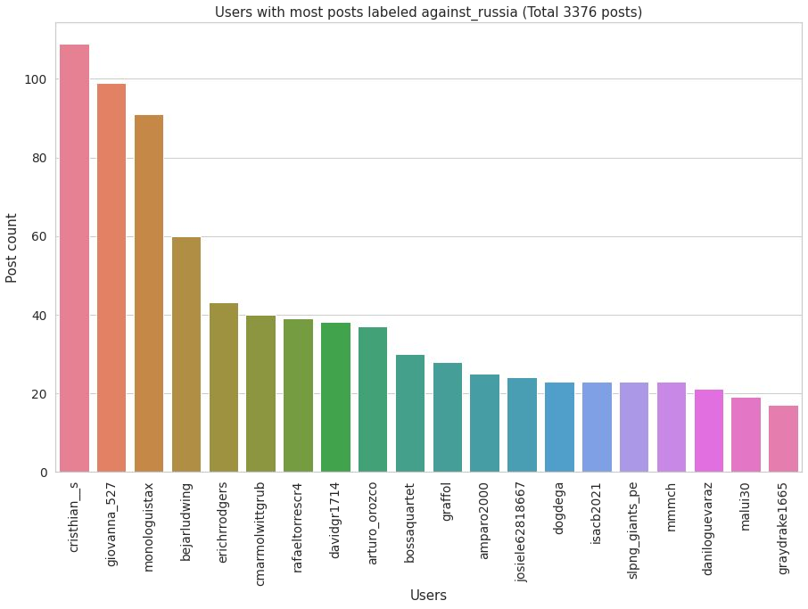
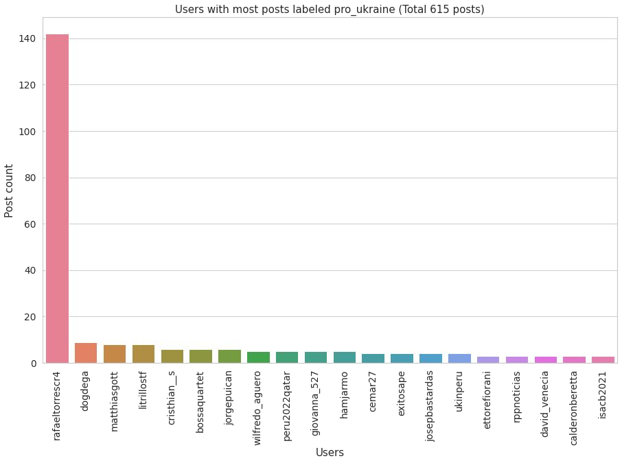
En el bloque contrario el reparto es más parejo en la categoría contra Rusia, donde cristhian__s, giovanna_527 y monologuistax superan los 90 tweets cada uno. La categoría a favor de Ucrania, en cambio, depende de una sola cuenta: rafaeltorrescr4 aporta cerca de 140 de los 615 tweets, casi una cuarta parte, y ninguna otra cuenta pasa de diez.
Un detalle que conviene señalar: varias cuentas aparecen entre las más activas de categorías opuestas. davidgr1714, monologuistax, bejarludwing y cristhian__s figuran tanto en la lista contra Rusia como en la lista a favor de Rusia. Puede tratarse de usuarios que matizan su posición, pero es más plausible que refleje una debilidad del modelo: como parte de un modelo de sentimiento, detecta bien la negatividad, pero le cuesta más identificar contra quién va dirigida.
Usuarios únicos por categoría. Contando cuentas distintas en lugar de tweets, la imagen se mantiene: alrededor de 4 900 cuentas publicaron al menos un tweet neutral, unas 1 400 al menos uno contra Rusia, unas 1 050 al menos uno a favor de Rusia, unas 750 al menos uno contra Ucrania y solo unas 330 al menos uno a favor de Ucrania.
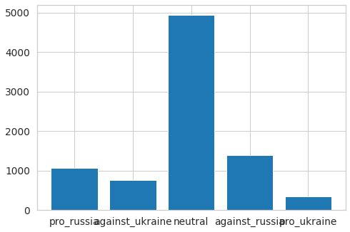
3. Conclusiones
- Los usuarios peruanos en Twitter, en general, muestran una posición neutral respecto al tema de la guerra.
- Los noticieros peruanos muestran una posición neutral en la mayoría de sus publicaciones.
- Las opiniones respecto a la guerra son mayormente de rechazo a Rusia más que de apoyo a Ucrania.
- Existe una cantidad considerable de publicaciones a favor de Rusia y en contra de Ucrania.
- Existen cuentas con claros sesgos al realizar varias publicaciones. Con la versión actual del modelo no se puede determinar si existe propaganda política.
- El modelo obtenido muestra buenos resultados a pesar de haber sido entrenado con un conjunto de datos reducido. Se puede entrenar el modelo con más datos para lograr un mejor desempeño.
4. Limitaciones y trabajo futuro
- La muestra no es la población. El operador
geocodesolo alcanza a usuarios que geoetiquetan sus tweets o declaran una ubicación en su perfil. Los usuarios peruanos sin ubicación quedan fuera, y los círculos de búsqueda dejan zonas sin cubrir. - Solo tweets originales. Los scrapers no devuelven las respuestas, donde suele concentrarse la discusión más polarizada. El script de limpieza contabiliza cuántas respuestas se perdieron, pero no las recupera.
- Filtrado por subcadena. El filtro de términos centrales busca coincidencias de subcadena, de modo que términos cortos como «USA» coinciden también con «usar» o «acusa» e introducen algo de ruido.
- Conjunto etiquetado pequeño y desbalanceado. La categoría a favor de Ucrania es rara en el dataset y por tanto también en las etiquetas, lo que explica en parte su dependencia de una sola cuenta. Ampliar el etiquetado, sobre todo en las clases minoritarias, es la mejora más directa.
- Objetivo de la postura. Los cruces de cuentas entre categorías opuestas sugieren que el modelo confunde a veces contra quién va dirigida una crítica. Un esquema de etiquetado que separe polaridad y objetivo, o un modelo de stance detection en lugar de uno de sentimiento como base, atacaría el problema de raíz.
- Propaganda. Detectar propaganda coordinada exige mirar más allá del texto: fecha de creación de las cuentas, cadencia de publicación, redes de retuits y repetición de contenido entre cuentas. El proyecto identificó cuentas con sesgo marcado, pero no tuvo elementos para afirmar que respondieran a una campaña.
Nota de 2026. Este trabajo se realizó en 2022, cuando Twint y snscrape todavía podían consultar la búsqueda pública de Twitter. Tras los cambios de la plataforma en 2023 ambas herramientas dejaron de funcionar contra X, por lo que el pipeline de recolección no puede reejecutarse tal cual hoy. El resto del pipeline, desde la limpieza hasta el entrenamiento, sigue siendo aplicable a cualquier colección de textos.
5. Referencias
- Dave, R. (2020, 4 de diciembre). Industrial Classification of Websites by Machine Learning with hands-on Python. Medium. https://towardsdatascience.com/industrial-classification-of-websites-by-machine-learning-with-hands-on-python-3761b1b530f1
- Lynn, S. (2021, 1 de septiembre). Intro to Word Embeddings and Vectors for Text Analysis. https://www.shanelynn.ie/get-busy-with-word-embeddings-introduction/
- Hugging Face. Text classification. https://huggingface.co/docs/transformers/tasks/sequence_classification
- Fine-tuning pretrained NLP models with Huggingface's Trainer. Medium. https://towardsdatascience.com/fine-tuning-pretrained-nlp-models-with-huggingfaces-trainer-6326a4456e7b
- Pérez, J. M., Giudici, J. C. y Luque, F. pysentimiento y el modelo
finiteautomata/beto-sentiment-analysis. https://huggingface.co/finiteautomata/beto-sentiment-analysis - Twint: github.com/twintproject/twint. snscrape: github.com/JustAnotherArchivist/snscrape.